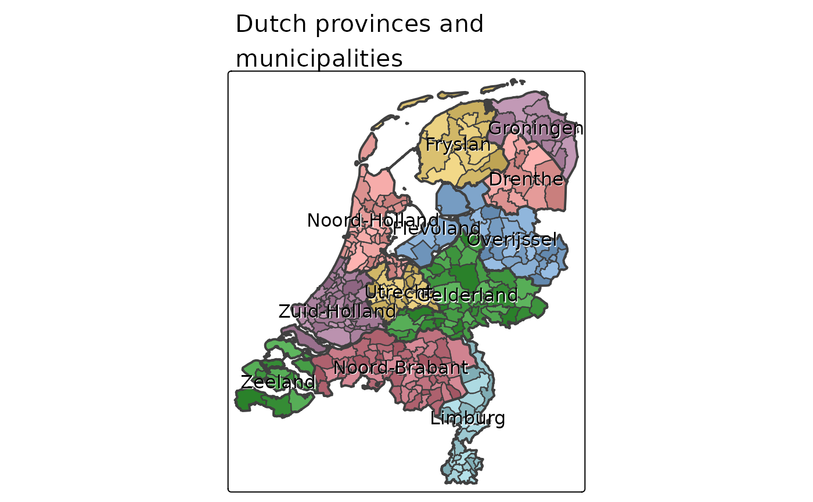

Color the polygons of a map such that adjacent polygons have different colors. This function returns the color indices
Arguments
- x
Either a shape (i.e. a
sforSpatialPolygons(DataFrame)(sppackage) object), or an adjacency list.- algorithm
either
"dsatur"(default), the DSatur heuristic backed by a tabu search, or"greedy", the heuristic on its own, which is faster but may use more colors than needed. See details.- ncols
target number of colors, all of which are used about equally often. By default 8. Raised to 4 if set lower, and raised further, with a message, if more colors are needed for a valid coloring.
- permutation
number that selects one of the many colorings a map has. By default 0. Any other whole number gives another one, so trying 1, 2, 3, ... is a way to look for a map that pleases. It changes both which polygons share a color and which color each group is given, and every permutation is equally valid and equally evenly spread.
- ...
to catch deprecated arguments
palette,contrastandminimize. See details.
Details
As of tmaptools 3.3, the deprecated color functions get_brewer_pal and palette_explorer, have been removed. These have been replaced c4a and c4a_gui respectively from the package cols4all. Therefore, map_coloring will return color indices and will ignore the input arguments palette and contrast. See example.
Adjacency is determined by shared boundary lines (as in "rook" contiguity), not by shared points alone. This matters for e.g. Voronoi tessellations, where three or more cells can meet at a single vertex without actually sharing an edge; treating such point-touches as adjacency can force the use of unnecessarily many colors.
ncols is the target number of colors, with a minimum of 4 (the four-color theorem guarantees that 4 colors suffice for any planar map). All ncols of them are used, about equally often, so that no color dominates the map. Only when ncols colors are too few for a valid coloring is the number increased, in which case the user is informed via cli_inform. Use ncols = 4 for a map that uses as few colors as possible.
Evening out the colors is possible because a polygon may take any color that none of its neighbours has. So as long as one color is used at least two polygons more often than another, some polygon can be moved from the first to the second. A color that the coloring itself did not need is simply one that is used zero times, and is filled up the same way; this is what spreads a coloring that needs only 4 colors over all ncols of them.
A map has many colorings, and which one comes out is decided by choices between equally good options: which color a polygon is given, which polygon is moved to even out the colors, and which colors are handed to which group in the end. The argument permutation settles those choices, so that each number gives a different, equally valid map. Raise it until the map looks good.
As of tmaptools 3.4, the argument minimize has been removed: ncols now determines the number of colors on its own. The result no longer depends on the random seed, and the random number generator of the caller is left untouched, so that repeated plots of the same map keep the same colors. To go looking for a nicer looking map, vary permutation instead of the seed.
The "dsatur" algorithm first runs the DSatur heuristic (Brelaz, 1979), which colors the most constrained polygon at each step: the one with the largest number of distinct colors among its already colored neighbours, ties broken by the number of neighbours. Since this is a heuristic, it may fail even when a valid coloring exists; on maps of contiguous regions it typically needs one color more than necessary. It is therefore followed by a tabu search (Hertz and de Werra, 1987), which starts from a coloring that uses ncols colors but may have neighbours sharing one, and then repeatedly recolors a polygon involved in such a clash until none are left. Two reductions keep this cheap: polygons with fewer than ncols neighbours are set aside and colored last (a free color is then always available), and the rest are split into groups that are not connected to each other and searched separately. Use algorithm = "greedy" to skip the tabu search.
References
Brelaz, D. (1979) New methods to color the vertices of a graph. Communications of the ACM 22(4), 251-256.
Hertz, A. and de Werra, D. (1987) Using tabu search techniques for graph coloring. Computing 39(4), 345-351.
Examples
if (require(tmap) && require(cols4all)) {
data(World)
## using cols4all directly
indices <- map_coloring(World)
pal <- c4a("brewer.set2", n = max(indices))
World$color = pal[indices]
tm_shape(World) +
tm_polygons("color", fill.scale = tm_scale_asis()) +
tm_crs("auto")
# using map_coloring via "MAP_COLORS" in tmap
tm_shape(World) +
tm_polygons("MAP_COLORS", tm_scale(values = "brewer.set2")) +
tm_crs("auto")
# other example
data(NLD_prov, NLD_muni)
tm_shape(NLD_prov) +
tm_fill("name",
fill.legend = tm_legend_hide()) +
tm_shape(NLD_muni) +
tm_polygons("MAP_COLORS",
fill_alpha = .25,
fill.scale = tm_scale(values = "brewer.greys")) +
tm_shape(NLD_prov) +
tm_borders(lwd=2) +
tm_text("name", options = opt_tm_text(shadow = TRUE)) +
tm_title("Dutch provinces and\nmunicipalities", bg.color="white")
}
#> Loading required package: cols4all
